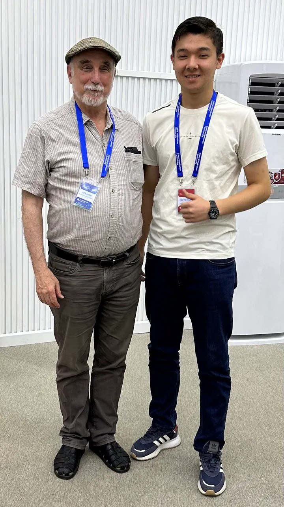
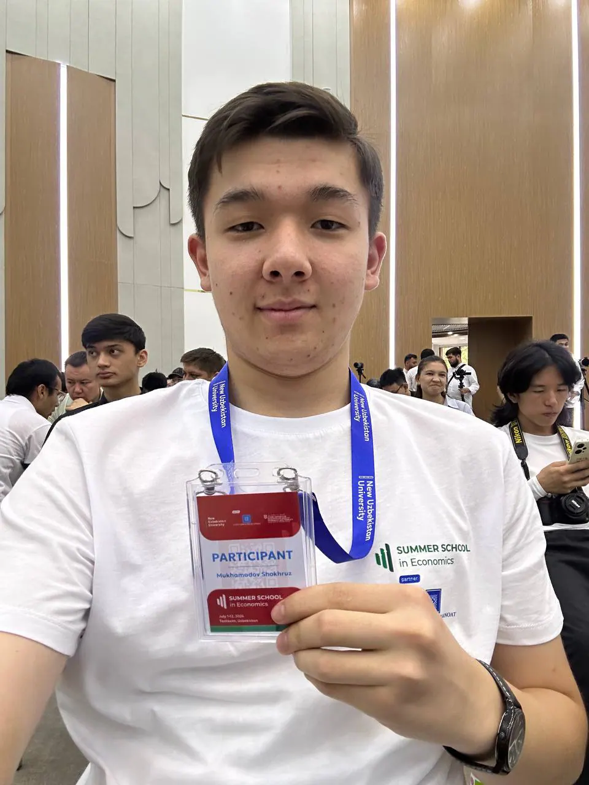
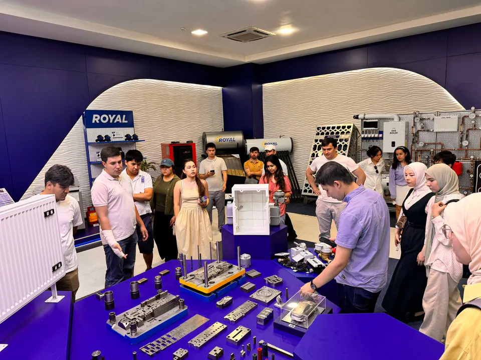
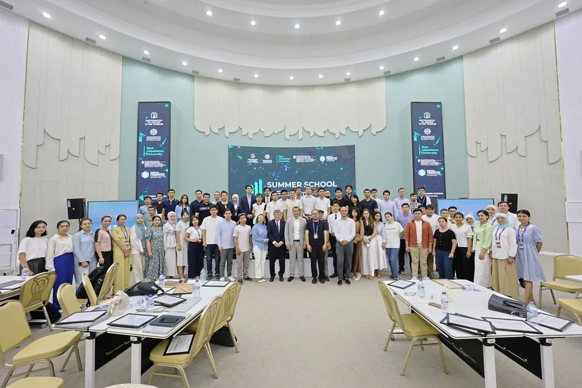

Summer School in Economics
New Uzbekistan University
- Role
- Participant & team researcher (the only high-school student)
- Organization
- New Uzbekistan University
- Dates
- Jul 2024

In July 2024, I was the only high-school student selected, out of 700 applicants, for New Uzbekistan University’s Summer School in Economics: twelve days of lectures by professors from leading universities, and a team research project.
July 2024 · Tashkent
Where I found my interest in economics
In July 2024, I was the only high-school student accepted, out of 700 applicants, to New Uzbekistan University’s Summer School in Economics. Over 12 days and 60 hours, professors from leading universities, including Professor Lawrence Blume, gave lectures, and we worked in teams on a research project. Most participants were undergraduates, PhD students and university lecturers, so I learned as much from the people around me as from the lectures. This is where I found my interest in economics.


 Play video: Summer School in Economics, New Uzbekistan University
Play video: Summer School in Economics, New Uzbekistan University
 Play video: Summer School in Economics: Young Economists Society
Play video: Summer School in Economics: Young Economists Society
Our research
How do characteristics of urbanisation influence child mortality in Uzbekistan?
Team
- Muhammadxon Muydinov
- Sevinch Ankasova
- Shokhruz Mukhamadov
- Shohjahon Mirodilov
- Shirin Tulaganova
- Ozoda Ozatbekova
- Munisa Shamsieva
- Bakhodir Allabergonov
1The question
Uzbekistan’s cities are growing fast. Does urbanisation lower child mortality, and through which channel: more economic opportunity or better infrastructure?
2What we built on
Fink and Hill (Harvard School of Public Health, 2013) studied 37 low- and middle-income countries. Big cities had much lower child mortality, yet rural areas still accounted for most child deaths. Their study did not test which factors explain the gap. We looked at those factors for Uzbekistan.
3Hypotheses
H0: Urbanisation does not significantly improve economic opportunities and does not reduce child mortality.
H1: Urbanisation significantly improves economic opportunities, which in turn reduces child mortality.
4Data and method
Annual country-level data for Uzbekistan, 2010–2023 (14 years), mainly from the World Bank, with IMF, UN and national statistics. A multiple regression of infant mortality on five characteristics of urbanisation:
MORT = a + a1·ELEC + a2·INTR + a3·SANI + a4·HEAL + a5·UNEM + e(access to electricity, internet use, safely managed sanitation, health expenditure, unemployment).
We also drew a causal diagram (DAG) of how urbanisation can affect child mortality through healthcare, sanitation, nutrition, education, economic opportunities and the environment.
5What we found
Infant mortality in Uzbekistan fell from about 30 to 13 per 1,000 live births between 2010 and 2023. In our regression, years with more access to electricity, more internet users and more safely managed sanitation had significantly lower infant mortality (p < 0.05). Health expenditure and unemployment were not statistically significant. In our data, the infrastructure side of urbanisation was more strongly linked to lower infant mortality than unemployment was.
6What I would do differently now
Our model had an R² of 0.998. Now I know that with only 14 yearly observations, this mostly shows that all these variables moved in the same direction over the same years: it shows correlation, not causation. Next time I would use data for Uzbekistan’s 14 regions, compare cities with villages, and test each channel separately.
7Files

Infant mortality in Uzbekistan, 2010–2023 (per 1,000 live births). 
Our causal diagram (DAG) of how urbanisation can affect child mortality. 
Regression results (14 annual observations).


Gallery
More moments



